DEFORM includes many ways of removing material:
Boolean
Shearing
Fracture
Boolean can be performed either as an interactive pre-processing operation, or as an operator between operations.
In this lab, a Boolean operation will be performed interactively in the preprocessor, followed by a forming operation with fracture.
1.2. Adding 2D Forming Operation
1.3. Select Geometry type and Simulation Modes
1.6. Defining Top die object data
1.6.1. Create Top Die geometry from primitive
1.7. Performing Boolean operation
1.8.1. Defining Fracture data in Material
1.8.2. Assigning Workpiece Fracture properties
1.9. Defining Top die object data for Flash trimming operation
1.9.1. Import the trim punch geometry
1.9.2. Assigning movement controls to trim punch
1.10. Defining Bottom die object data
1.10.1. Import the trim die geometry
1.11. Defining Object 4 object data
1.11.1. Import the trim flash holder geometry
1.11.2. Assigning movement controls to trim flash holder
1.13. Define Inter-object relations
1.15. Data checking and database generation
1.16. Run and monitor a simulation
On a Windows machine, go to the  button select DEFORM-v1x.xxx (.xxx indicates version number E.g. v14.0.2) and select DEFORM GUI Main v1x.x from the menu. The DEFORM GUI Main window will appear.
button select DEFORM-v1x.xxx (.xxx indicates version number E.g. v14.0.2) and select DEFORM GUI Main v1x.x from the menu. The DEFORM GUI Main window will appear.
Create a new problem either by selecting File  New Problem or by clicking the New Problem
New Problem or by clicking the New Problem  icon. The Problem Setup window will appear as shown in Fig. 2DBTL1.1. Select " Integrated Manufacturing Process"
radio button and unit system as "English" radio button in unit field. Define Problem Name as " Boolean_Trimming " and make sure the “Show option dialog” check box is turned on (if we do not turn
on the “Show option dialog” check box, then we will not get the New Project dialog in MO UI). Then click on
icon. The Problem Setup window will appear as shown in Fig. 2DBTL1.1. Select " Integrated Manufacturing Process"
radio button and unit system as "English" radio button in unit field. Define Problem Name as " Boolean_Trimming " and make sure the “Show option dialog” check box is turned on (if we do not turn
on the “Show option dialog” check box, then we will not get the New Project dialog in MO UI). Then click on  button to open a new Problem using
the Deform Integrated Manufacturing Process.
button to open a new Problem using
the Deform Integrated Manufacturing Process.
Problem Setup Window
Multiple operation wizard will open with the New Project dialog, at this point user will be prompted to specify a project name (system will create a separate folder with this project name) and title for this session. In this session we will use "Boolean_Trimming "
as the project name. Confirm that First operation check box is unchecked as we will add operation later, click on  to continue to open the operation.
to continue to open the operation.
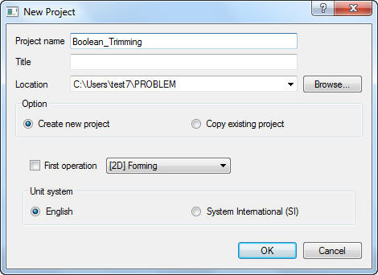
New MO Project window
Multiple Operation wizard will open new project. Add 2D Forming operation from the Explorer Operations list. Operation can be add by clicking on 2D Forming operation  button (See Fig. 2DBTL1.3.) or user can also added by drag and drop
into the Operation Editor.
button (See Fig. 2DBTL1.3.) or user can also added by drag and drop
into the Operation Editor.
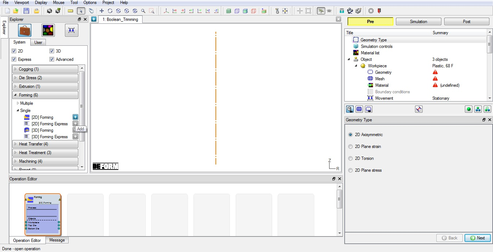
Adding 2D Forming operation from operation explorer
Confirm the geometry type selected is Axi-symmetric in Geometry type page, then click  .
.
In this lab we will be showing how to setup trimming operation with Isothermal condition, so in Simulation controls page, Check the Deformation mode check box, then click  until Objects page.
until Objects page.
The forming operation to be simulated requires a workpiece and three dies. By default three objects will be added in Forming operation list, so add another object by clicking the  (insert object) button to add 4th object in list, Workpiece and three dies. Object window looks as shown in Fig. 2DBTL1.4. Click
(insert object) button to add 4th object in list, Workpiece and three dies. Object window looks as shown in Fig. 2DBTL1.4. Click
 button.
button.
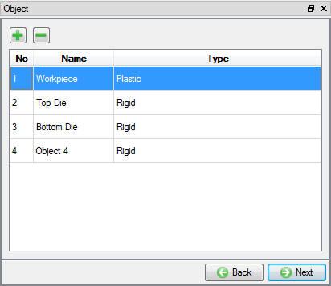
Adding Objects in list
Click the  button and Import the "gear2.DB" file from DEFORM installation folder \Tutorials directory. Select Last step in Step List page (See Fig. 2DBTL1.5.) and Select workpiece in Object selection window. Now the loaded workpiece shape from
the database should be like as shown in Fig. 2DBTL1.6. Click
button and Import the "gear2.DB" file from DEFORM installation folder \Tutorials directory. Select Last step in Step List page (See Fig. 2DBTL1.5.) and Select workpiece in Object selection window. Now the loaded workpiece shape from
the database should be like as shown in Fig. 2DBTL1.6. Click  until Top die page.
until Top die page.
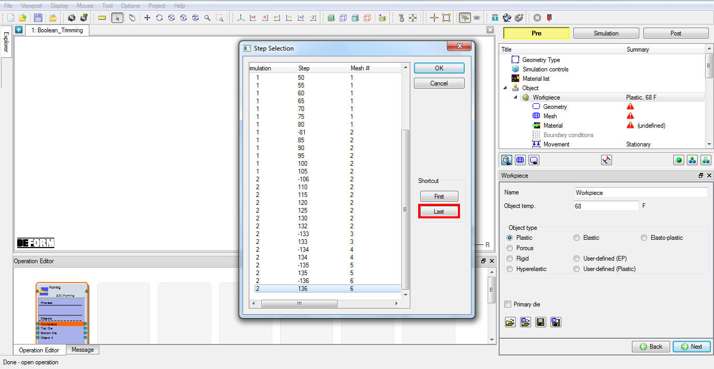
Step selection page popup window
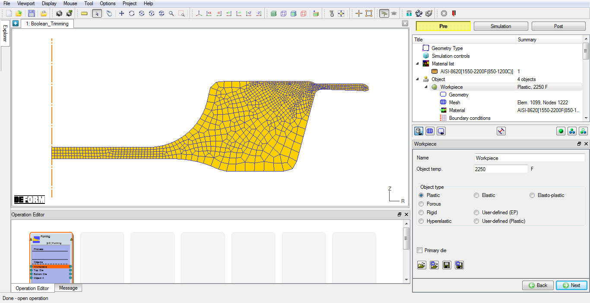
Loaded Workpiece object data from Database
Change the Object name to "Trim Geo", Keep the Top die default temperature as 68° F and confirm the object type selected as rigid and Primary die. Click  to Top die geometry page.
to Top die geometry page.
Click on the  button to create a geometry within DEFORM. The Trim Geo dia is 5.5”, and Height of 3" with Y: -1", so you will define a width of half the diameter.
Define Radius as 2.75" and Height (H) as 3" (See Fig. 2DBTL1.7.).
Click on
button to create a geometry within DEFORM. The Trim Geo dia is 5.5”, and Height of 3" with Y: -1", so you will define a width of half the diameter.
Define Radius as 2.75" and Height (H) as 3" (See Fig. 2DBTL1.7.).
Click on  button to close the Geometry Primitive dialog. Select , using "Offset" positioning move the Top Die object down in -Y direction by -1” as shown in Fig. 2DBTL1.8. and observe the geometry in graphics window.
button to close the Geometry Primitive dialog. Select , using "Offset" positioning move the Top Die object down in -Y direction by -1” as shown in Fig. 2DBTL1.8. and observe the geometry in graphics window.
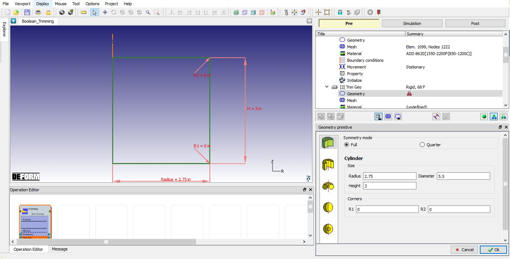
Geometry Primitive window
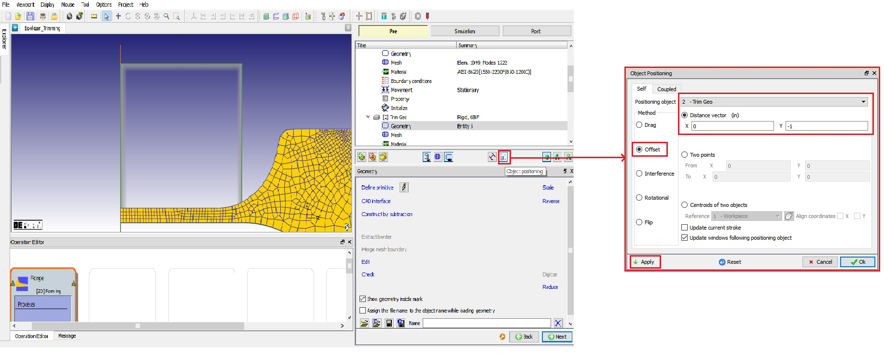
Positioning the Workpiece using Object Postioning option
Now Click on mode, select Workpiece object from Operation tree and click on Boolean () icon on Top line Menu (See Fig. 2DBTL1.9.).
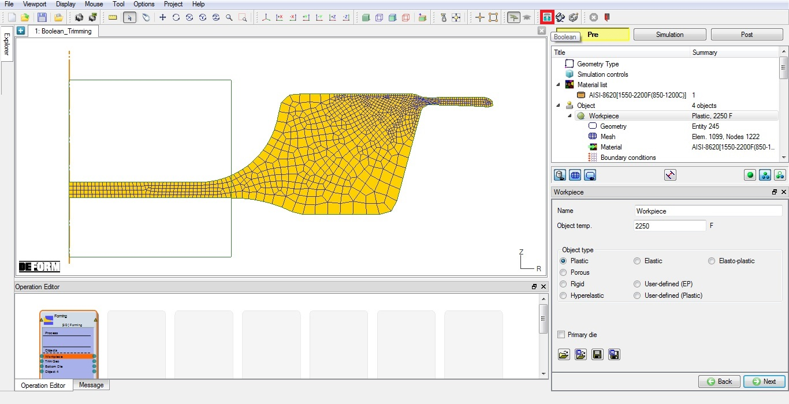
Opening Boolean wizard by clicking on Boolean icon
In Boolean wizard, select Trim Geo from Object to be subtracted list and click on  button. After boolean, the workpiece will be as shown in Fig. 2DBTL1.10.
button. After boolean, the workpiece will be as shown in Fig. 2DBTL1.10.
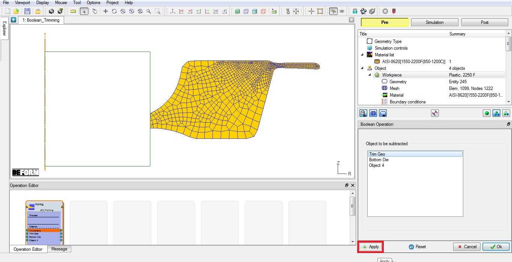
Workpiece after boolean operation
Now we will setup Flash trimming operation. Go to Workpiece Mesh page.
Define Target number of Elements as 5000 and no need to regenerate mesh. Click  to Material page.
to Material page.
Click on button to define Fracture data, Click on Miscellaneous tab, select Normalized C&L Fracture model click
on  button and define Critical value as 1 (See Fig. 2DBTL1.11.)
Now Click
button and define Critical value as 1 (See Fig. 2DBTL1.11.)
Now Click  and close the Material Edit window. Click
and close the Material Edit window. Click  until Properties page.
until Properties page.
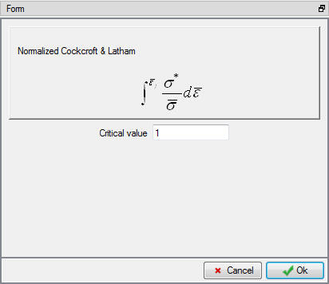
Workpiece material Fracture model window
Click on Fracture tab and select "Fracture element deletion" from pull down menu and define Fracture Elements value as 2. Click
 to Top die page.
to Top die page.
Change the Object name to "trim punch", Keep the default temperature as 68° F and confirm the object type selected as rigid and Primary die. Click  to Punch geometry page.
to Punch geometry page.
Click the  (Load geometry from a file) button and open (import) the file “TrimPunch.IGS”
by browsing the geometry file path located in DEFORM installation folder \Tutorials directory. Check the geometry using
(Load geometry from a file) button and open (import) the file “TrimPunch.IGS”
by browsing the geometry file path located in DEFORM installation folder \Tutorials directory. Check the geometry using  option to make sure the
geometry is OK. Click
option to make sure the
geometry is OK. Click  until Punch movement page.
until Punch movement page.
The default mode is constant speed. Input a value of 3 in/sec for the Constant value and confirm that the Direction is -Y. Click  until
Bottom die page.
until
Bottom die page.
Change the Object name to "trim die", Keep the default temperature as 68° F and confirm that the object type selected is rigid. Click  to trim die geometry page.
to trim die geometry page.
Click the  (Load geometry from a file) button and
(Load geometry from a file) button and  open (import) the file “TrimDie.IGS”
by browsing the geometry file path located in DEFORM installation folder \Tutorials directory. Check the geometry using
open (import) the file “TrimDie.IGS”
by browsing the geometry file path located in DEFORM installation folder \Tutorials directory. Check the geometry using  option to make sure the geometry is OK. Click
option to make sure the geometry is OK. Click
 until Object 4page.
until Object 4page.
Change the Object name to "trim flash holder", Keep the default temperature as 68°F and confirm the object type selected is rigid. Click  to geometry page.
to geometry page.
Click the  (Load geometry from a file) button and
(Load geometry from a file) button and  open (import) the file “TrimFlashHolder.IGS”
by browsing the geometry file path located in DEFORM installation folder \Tutorials directory. Check the geometry using
open (import) the file “TrimFlashHolder.IGS”
by browsing the geometry file path located in DEFORM installation folder \Tutorials directory. Check the geometry using  option to make sure the geometry is OK. Click
option to make sure the geometry is OK. Click
 until Movement page.
until Movement page.
Select Sliding die type movement radio button. Input a value of 1 klb/in as Constant Stiffness, 0.1klb as Preload, 3"
as Max. disp, select "trim punch" object in Mounted on object list and confirm that the Direction is +Y (See Fig. 2DBTL1.12.). Click  until Positioning page.
until Positioning page.
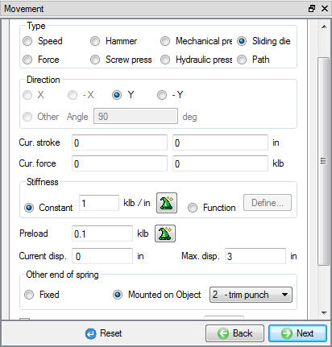
Trim Flash holder Movement page
Using Interference method, position the Workpiece on Trim die in -Y direction, then position the trim flash holder on Workpiece in -Y direction and trim punch on Workpiece in -Y
direction. Click  until Contact page.
until Contact page.
Assign the default inter-object relationships using  button. Click on the
button. Click on the  button for one of the relationships. Select Shear type friction radio button, use the Constant radio button and define 1 value. Click
button for one of the relationships. Select Shear type friction radio button, use the Constant radio button and define 1 value. Click  to exit the
menu. Click
to exit the
menu. Click  to apply the friction value to the three other relationships. Click
to apply the friction value to the three other relationships. Click  to
Step controls page.
to
Step controls page.
Define Number of steps as 100, Step increment as 10 and define constant die displacement as 0.005 in/step as shown in Fig. 2DBTL1.13.
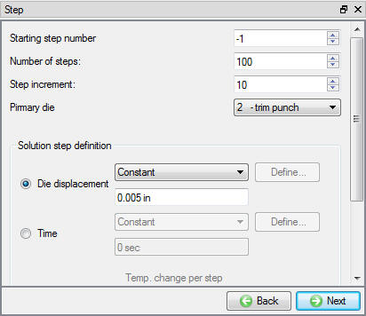
Step controls page
Click on the  button, the data checking system will confirm that all defined data is appropriate for running a simulation.
button, the data checking system will confirm that all defined data is appropriate for running a simulation.
Red marks indicate missing or incorrect data that will prevent a simulation from running. It is necessary to correct these errors before the database can be generated.
Yellow marks indicate data which may be suspect and should be reviewed. These should be investigated carefully, as they might result in system instability or erroneous (incorrect) results.
Review the data checking information. If there are no yellow or red marks, click the  button.
button.
You should look for the words: Database has been generated. When you see this, it means that your inputs have been saved to the database and you are now ready to run the simulation.
Click on the MO  Mode button (above the operation tree) to start the simulation.
Mode button (above the operation tree) to start the simulation.
Click on the  action label to open the Run Options dialog. Use the default Continue Run option to select “Continue from the last step” (from
step -1) option and then select the Simulation mode as Interactive and click on
action label to open the Run Options dialog. Use the default Continue Run option to select “Continue from the last step” (from
step -1) option and then select the Simulation mode as Interactive and click on  button to run the simulation.
button to run the simulation.
Watching the simulation graphics provides an initial idea of what to expect when opening the post processor. Also monitor simulation from Simulation and log messages. The message file and log file will indicate that the simulation has been completed
on the last line, confirming that click on  mode button to review results.
mode button to review results.
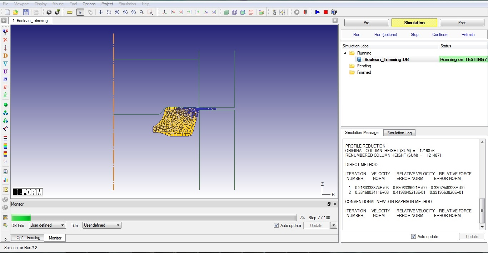
Running the simulation from MO simulation mode
Play through the Steps and see the Damage distribution by plotting the Damage State variable.
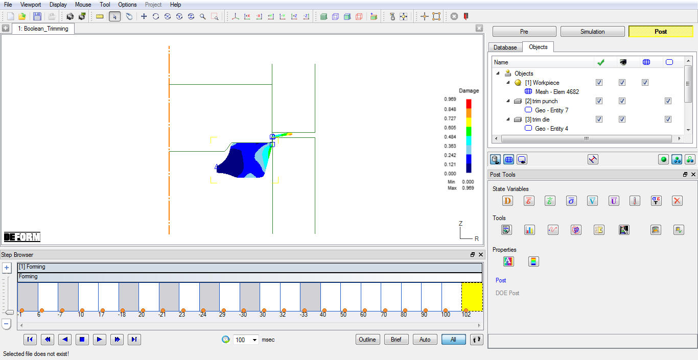
Damage distribution at last step